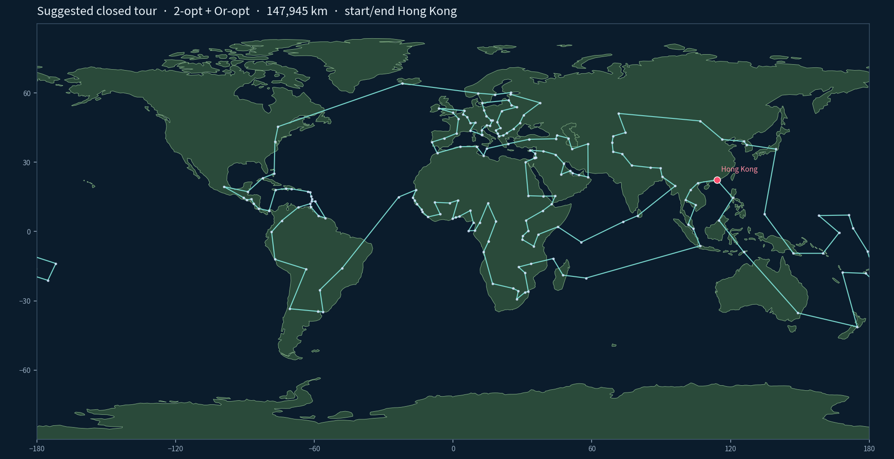

Travel around the world
Hong Kong → 195 UN member / observer capitals → Hong Kong. Closed great-circle tour, each city once. Best heuristic in this repo: 2-opt + Or-opt, 147,945 km.

Hong Kong → 195 UN member / observer capitals → Hong Kong. Closed great-circle tour, each city once. Best heuristic in this repo: 2-opt + Or-opt, 147,945 km.
